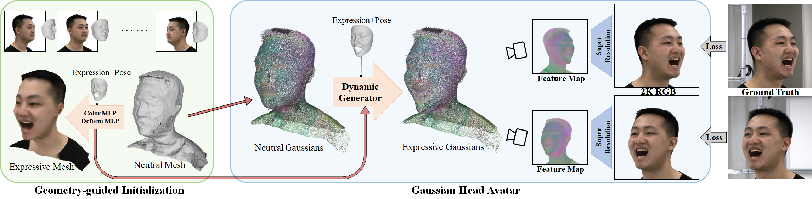

Gaussian Head Avatar:
Ultra High-fidelity Head Avatar via Dynamic Gaussians
Yuelang Xu1, Benwang Chen1, Zhe Li1, Hongwen Zhang1, Lizhen Wang1, Zerong Zheng2, Yebin Liu1
1Tsinghua University 2NNKosmos Technology
Abstract
Creating high-fidelity 3D head avatars has always been a research hotspot, but there remains a great challenge under lightweight sparse view setups. In this paper, we propose Gaussian Head Avatar represented by controllable 3D Gaussians for high-fidelity head avatar modeling. We optimize the neutral 3D Gaussians and a fully learned MLP-based deformation field to capture complex expressions. The two parts benefit each other, thereby our method can model fine-grained dynamic details while ensuring expression accuracy. Furthermore, we devise a well-designed geometry-guided initialization strategy based on implicit SDF and Deep Marching Tetrahedra for the stability and convergence of the training procedure. Experiments show our approach outperforms other state-of-the-art sparse-view methods, achieving ultra high-fidelity rendering quality at 2K resolution even under exaggerated expressions.

Fig 1.Gaussian head avatar achieves ultra high-fidelity image synthesis with controllable expressions at 2K resolution. The above shows different views of the synthesized avatar, and the bottom shows different identities animated by the same expression. 16 views are used during the training.
[arXiv] [Code]
Overview

Fig 2. Overview of the Gaussian Head Avatar. The overview of the Gaussian Head Avatar rendering and reconstruction. We first optimize the guidance model including a neutral mesh, a deformation MLP and a color MLP in the Initialization stage. Then we use them to initialize the neutral Gaussians and the dynamic generator. Finally, 2K RGB images are synthesized through differentiable rendering and the super-resolution network. The Gaussian Head Avatar are trained under the supervision of multi-view RGB videos.
Results
Fig 7. Cross-identity reenactment results.
Fig 8. 8 views input.
Fig 8. 6 views input.

Fig 5. Qualitative comparisons of different methods on self reenactment task. From left to right: NeRFBlendShape, NeRFace, HAvatar and Ours. Our method can reconstruct details like beards, teeth, etc. with high quality.

Fig 6. Qualitative comparisons of different methods on cross-identity reenactment task. From left to right: NeRFBlendShape, NeRFace, HAvatar and Ours. Our method synthesizes high-fidelity images while ensuring the accuracy of expression transfer.
Demo Video
Citation
@article{xu2023gaussianheadavatar,
title={Gaussian Head Avatar: Ultra High-fidelity Head Avatar via Dynamic Gaussians},
author={Xu, Yuelang and Chen, Benwang and Li, Zhe and Zhang, Hongwen and Wang, Lizhen and Zheng, Zerong and Liu, Yebin},
booktitle={ArXiv},
year={2023}
}